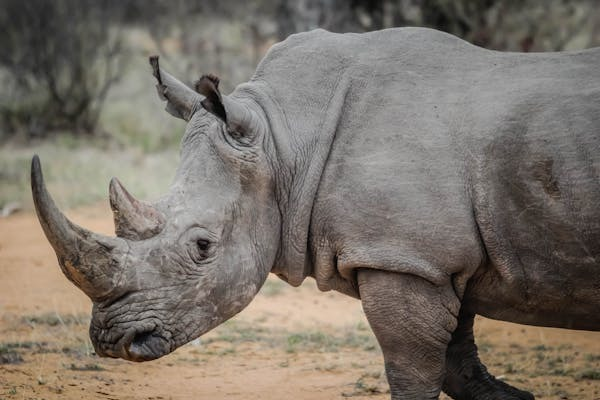

LION: Out of all the Big Cats in Masai Mara, the Lion
is the one that arouses much awe and admiration. It is the largest of Africa's big cats and
is commonly reffered as the "King of the Jungle".
ELEPHANT: African elephants are
fascinatingly intelligent and socially complex animals, and one of Africa’s most iconic
species. They are the largest land animals on Earth.

RHINO: Out of the two (black and white
rhinos) black rhinos are the only species found in Masai Mara, they are slightly smaller
but more aggresive species compared to White Rhino which is more commonly found at Lake
Nakuru.
LEOPARD: The Leopard (Panthera Pardus) is
counted as one of the Big Cats. Though
Leopards can be found in Masai Mara in healthy numbers Leopards almost always hunt on their
own and are by nature 'shy', preferring to hunt at night.
BUFFALLO:
These large bovines are regarded as one of the more dangerous animals in East Africa not
least due to their volatile and unpredictable nature, which is one of the reasons the
African Buffalo has never been domesticated as is the case in Asia.
 CRESTED PORCUPINE: Crested
porcupine are mostly seen in non-desert habitat in savannas, woodlands, steppes and uplands.
Crested Porcupine is a very large, black-bodied, nocturnal
rodent with long, black and white spines.
CRESTED PORCUPINE: Crested
porcupine are mostly seen in non-desert habitat in savannas, woodlands, steppes and uplands.
Crested Porcupine is a very large, black-bodied, nocturnal
rodent with long, black and white spines.
 HONEY BADGER: Honey badger also known as
ratel is a mammal widely distributed in Africa, Southwest Asia and the Indian subcontinent.
They get their name from their fondness for feeding on honey and honeybee larvae.
HONEY BADGER: Honey badger also known as
ratel is a mammal widely distributed in Africa, Southwest Asia and the Indian subcontinent.
They get their name from their fondness for feeding on honey and honeybee larvae.